You manage what goes beyond a single activity: the organization’s identity, the list of activities, accounts and roles. This is the board level. You also administer every activity, without having to be appointed to it.
This guide covers only the features specific to this role. Day-to-day management of an activity (periods, areas, appointments, progress) is described in the activity admin guide.
Starting point
Where your screens are
The Manage the organization group of the menu sits below the “Manage the activity” group. It has five entries: Organization, Activities, Directory, Admins and Cloud provider. The Organization, Directory, Admins and Cloud provider entries appear only for your role. The activity admin guide describes the “Admin notifications” screen. For you, it adds an “Organization” group at the top. This group reports the archivings and admin appointments made by another organization admin. An activity without an admin also sends you its admin notifications. Your other controls are on the Activities and Sheet editing pages, as fields and buttons that activity admins do not see.
The directory and admin tables can be sorted, filtered and resized like those of the activities. The activity admin guide describes this in “Where your screens are”.
Your screens
What only you can do
Organization identity
/<activity>/admin/organisation
The page gathers the organization’s name, contacts, logo and theme. Each activity can then override the contacts, logo and colors for itself.
IdentityThe name, the acronym, the organization’s contact, the support address and the team page. The contact receives replies to emails. The support address is a role address: the “Support” entry of the account menu opens an email to this address.
Role addressesThe domains allowed for the addresses quoted in sheets, and the shared mailboxes hosted with a consumer mail provider.
Logo and faviconThe PNG logo, its SVG variant and the favicon.
ThemeThe colors and the two fonts. Relaytour checks the contrast before saving, and a color left empty uses the Relaytour color.
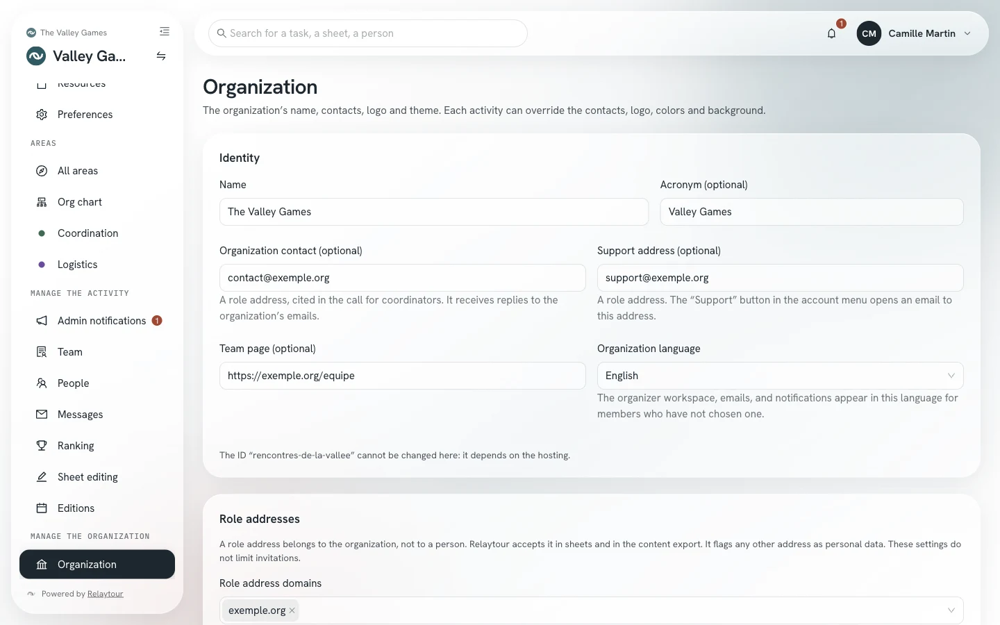
Organization page, on the sample organization shipped with Relaytour.
Organization content
/<activity>/admin/organisation
The application is the source of truth for the content. The panel at the bottom of the Organization page shows the date of the last import or export, and reports whether admins have changed the content since.
Download the content (zip)Get the identity, activities, areas, sheets and task templates in one archive.
Import a content folderUpload a zip archive in the export format: one from another installation, or a folder changed outside the application. Relaytour checks the archive, then shows what the import creates and changes. Nothing is written before the “Import the archive” button.
The archive contains no people, no appointments and no dated tasks. Download it before any import: an import refuses to overwrite more recent changes.
The import creates or updates the identity, activities, areas, sheets and task templates. It removes nothing, and the organization keeps its identifier. An archive weighs 20 MB at most. When admins have changed the content since the last export, the import asks for your confirmation before it replaces their changes. A sheet changed in Relaytour is never replaced: it appears as a conflict in the report. Activity admins import the folder of their own activity from the Activities screen.
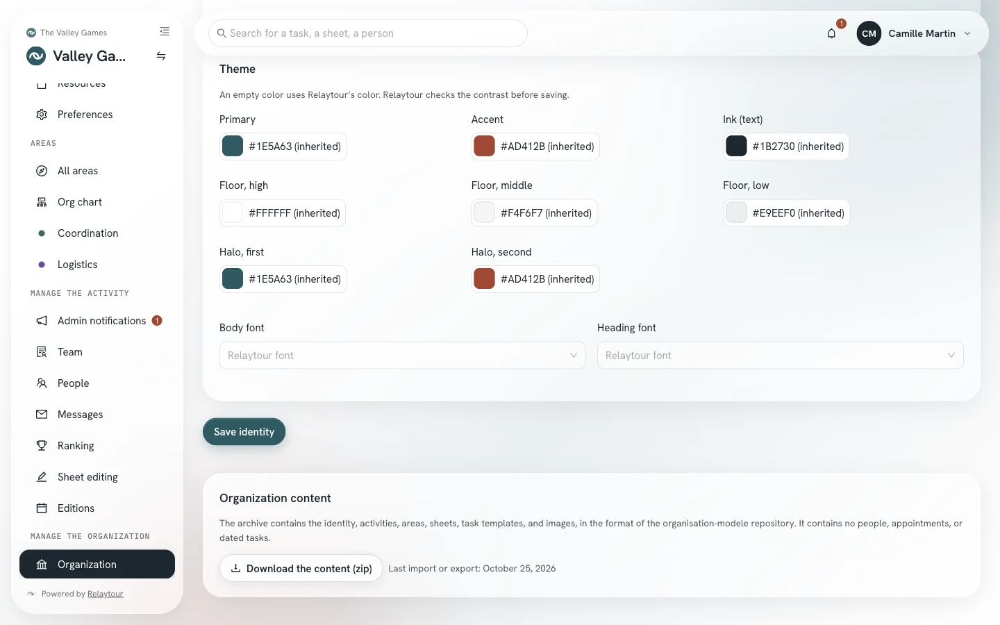
The Organization content panel, on the sample organization.
Create and archive an activity
/<activity>/admin/activites
You see all the activities of the organization, including those you are not appointed to administer. Two commands are reserved for you.
New activityCreate an event, a section or a body, with its identifier, its kind and its area groups.
ArchivedArchive a finished activity. It disappears from the selector and stays available for reading.
The identifier appears in the page address and no longer changes after creation. A new activity starts without any module: its admins turn on the calendar, volunteers, or documents in the same window.
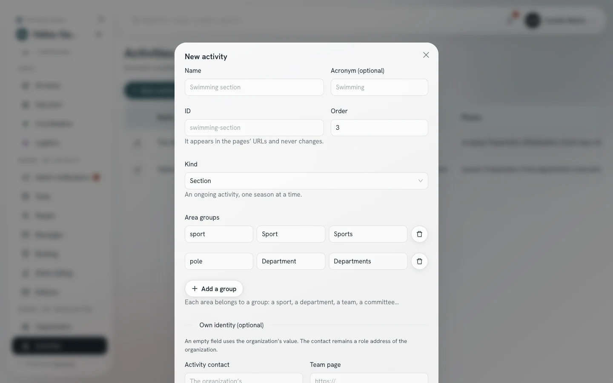
Creating an activity, on the sample organization.
Directory and accounts
/<activity>/admin/annuaire
An account is shared across the whole organization, and the same person can belong to several organizations. Only you can change the account itself and the roles. Only you can read the full directory, in the “Manage the organization” group: the “Activities” column shows where each person takes part. Filters separate admins from members, isolate one activity, or keep only the members with “No activity”. The “People” screen of an activity shows only its team. In the “Team” screen, the appointment list also offers you the members of other activities, followed by the names of their activities.
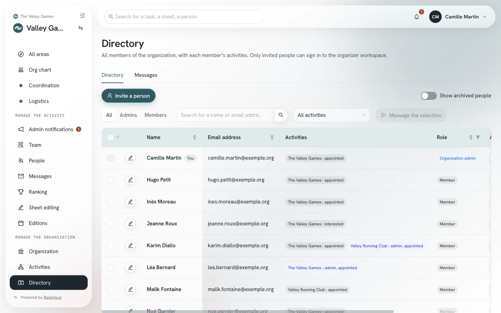
Organization directory, on the sample organization. The people and addresses are fictional.
Invite a personCreate an account, then choose the activity teams the person joins without an area, the activities they administer and their areas, appointed or of interest. A person invited without an activity sees no activity. An address that already has an account outside your organization receives an invitation, listed in the “Pending invitations” box: the person accepts or declines it from their account, and nothing is created in their name before they agree. The invitation does not keep the activity admin role: you appoint the person after they agree.
Edit the accountOpen an account’s window with the pencil on its row, or by clicking the row. There you set the activity teams the person joins, the activities they administer, their appointed areas and their areas of interest, in each activity. A person with “No activity” joins an activity team here.
First and last nameCorrect a person’s name as long as they have never signed in. After their first sign-in, the person edits their own name in their preferences.
ArchiveClose the access of a person who leaves your organization. They keep their account, and their history is preserved.
RestoreReopen the access of an archived person. The “Show archived people” switch makes them appear in the table.
MessagePrepare a message for one member, or for the checked members with “Message the selection”. The message leaves from your own mail app. The “Messages” tab lists all the messages of the organization, including those of the activities.
A message from the directory is addressed to members of the organization, whatever their activity. The activity admin guide describes the writing window in “Messages to your team”.
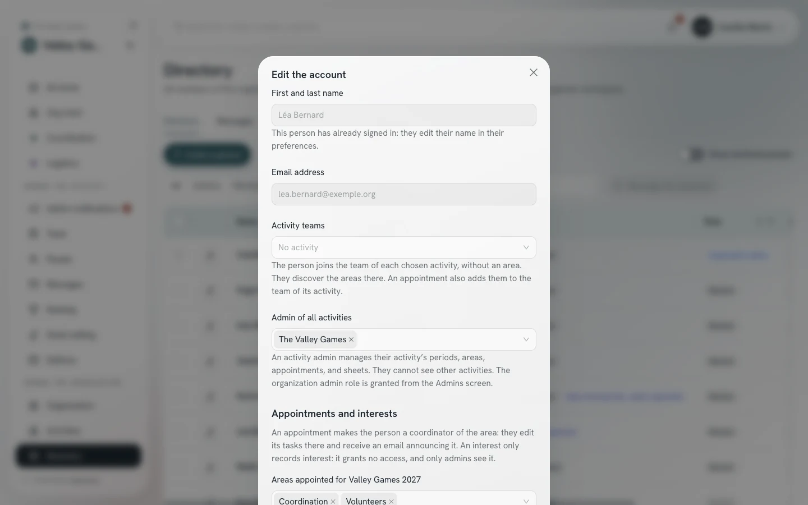
Editing an account, on the sample organization. The person is fictional.
Admins
/<activity>/admin/admins
The screen lists the organization admins, then the admins of each activity. You appoint and remove both.
Make adminChoose a person in a block’s list, then make them organization admin or admin of this activity.
RemoveRemove a person’s role, after confirmation. You cannot remove your own organization admin role.
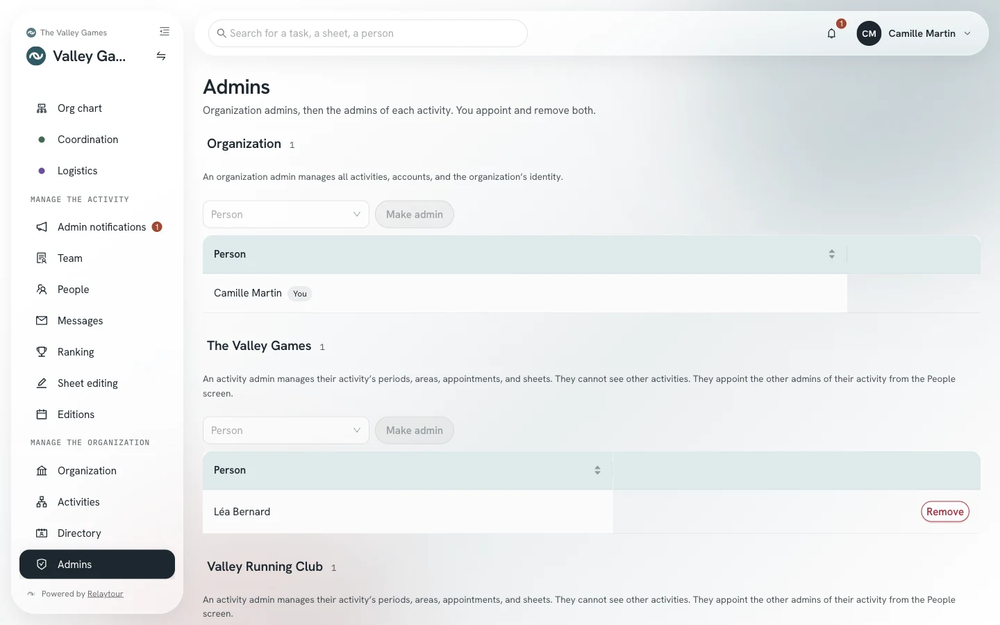
Admins screen, on the sample organization. The people are fictional.
An activity admin sees neither the other activities nor their people. They appoint the other admins of their activity from the “People” screen.
The invitation email contains the link to the user guide for the person’s role. After an appointment, resend the invitation from the directory to give them the user guide for their new role.
Right over all sheets
/<activity>/admin/redaction
You see all the sheet editing rights of the organization, and you have one more option in the list of sheets concerned.
All sheets, common ones includedGive the editing of common sheets to a person, for example the coordination.
An activity admin grants a right only over the areas of their activity.
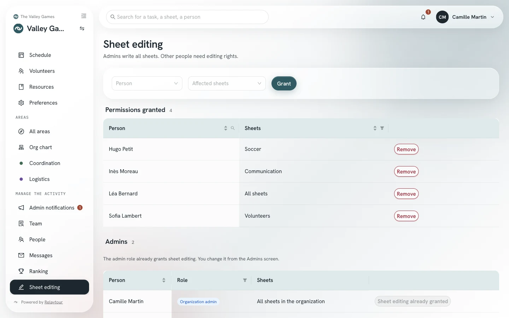
Sheet editing screen, on the sample organization.
Cloud provider
/<activity>/admin/espace-fichiers
The cloud provider is the online service where the association keeps its documents: SharePoint, Google Drive, Dropbox or Nextcloud. You connect it with your own account. Members then read its documents in Relaytour, without an account with the provider. Relaytour copies no document: it reads the document from the provider each time it is opened.
The person who runs the server chooses the providers offered. If they have enabled none, the page says so and offers no connection.
ConnectOpen the provider’s sign-in page, then come back to Relaytour. A Nextcloud is identified by its address. There is only one connection per organization.
Google service accountConnect Google Drive through a technical account of the association, whose key you upload. This account exports sheets only to a shared drive.
ReconnectDisconnectRenew the access, or close it. After a disconnection, linked folders remain, but members can no longer read their documents and the export stops.
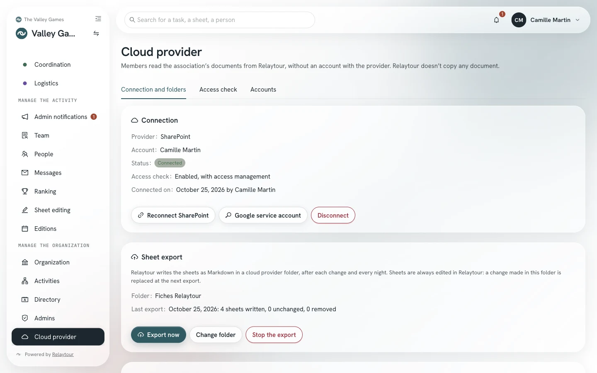
Cloud provider page, on the sample organization. A local folder stands in for the provider.
A linked folder makes a provider folder readable in an activity. You choose its readers: the whole activity, or a list of areas and groups. A group, such as sports or departments, also applies to the areas that join it later. A linked folder is read like the sheets of those areas, or like the common sheets.
Link a folderBrowse the provider’s folders, open the folder to link, then choose its readers. An entire library cannot be linked, and a folder is linked only once per activity.
EditChange the readers of a linked folder or its display name, without removing it. Before saving, Relaytour announces the linked documents that the readers of their sheet would no longer read. These documents stay hidden in their sheet as long as the folder does not serve its area.
Extend the linked folderOpen this documentThese two responses are behind the alert button of a linked document, in a sheet that also concerns other areas. The first adds the sheet’s areas and groups to the folder’s readers. The second opens this one document to everyone who reads the sheet, without opening the rest of the folder. “Restrict again” removes this opening.
RemoveRemove a folder from the activity. The folder stays with the provider, and sheets no longer cite its documents.
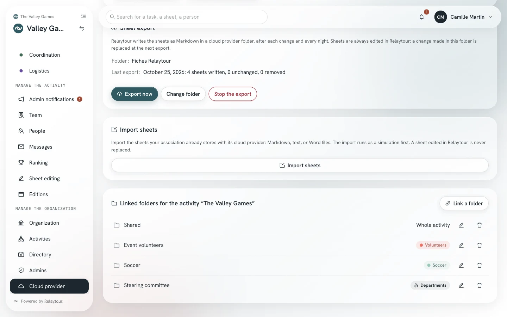
The linked folders of an activity, on the sample organization.
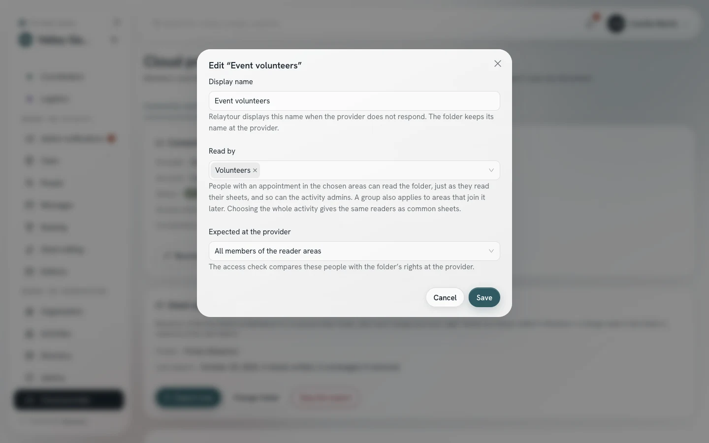
The “Edit” window of a linked folder.
Relaytour can also write the sheets to the provider, in Markdown, and import the sheets the association already keeps there.
Choose the export folderIndicate where Relaytour creates the “Fiches Relaytour” folder. Relaytour writes each sheet there one minute after it is edited, then every night.
Export nowStop the exportStart an export without waiting, or stop writing to the folder. The result of the last export appears in the panel.
Import sheetsChoose one source folder per area, then read the simulation before importing. Markdown and text files are imported as they are, and Word documents are converted to Markdown.
Sheets are always edited in Relaytour. A manual change made in “Fiches Relaytour” is replaced at the next export. A sheet that contains a personal contact detail is neither exported nor imported. An import never replaces a sheet edited in Relaytour.
Once the provider is connected, the page has three tabs: “Connection and folders”, “Access check” and “Accounts”. The check compares the teams with the rights on the linked folders at the provider. It reads the provider’s directory and groups, and changes no right. With SharePoint, a Microsoft Entra admin must first approve two more permissions. With Dropbox, enabling it also requires reconnecting. With Google Drive and Nextcloud, you enable it without reconnecting. Google Drive and Dropbox have no account directory: Relaytour compares people’s addresses with those of the rights.
Enable the access checkReconnect the provider with read access to the directory. An organization that does not enable it keeps the original connection.
Check nowCompare, for each linked folder of the activity, the expected people with its rights. Each person appears under their team, with their status: “Has access” (directly, through a group or through the whole organization), “No account” or “No access”. The “Unknown” status flags a group or rights that Relaytour does not read. The “Extra access” block names the accounts that have a right without being expected. Relaytour also checks every night.
Expected at the providerIn the “Edit” window of a linked folder, choose all the members of the reader areas, or only their main contacts.
Manage accessChoose, for a linked folder, what Relaytour offers: check only, share the folder for reading or writing, or add people to a provider group that already has a right on the folder. Management requires reconnecting, and one more permission with Microsoft.
ApplyDismissApply allRelaytour offers to add the expected people who have no access. Relaytour also offers to remove the access it created for people who are no longer expected. Relaytour never removes access set by hand, or access that has changed since it was created. A dismissed access proposal does not come back until the person’s situation changes. With a folder setting, Relaytour applies additions without waiting; a removal always waits for an admin’s decision.
AccountsRead, for each member, whether their account is found, invited or absent from the directory, and enter their account address when it differs from their Relaytour address.
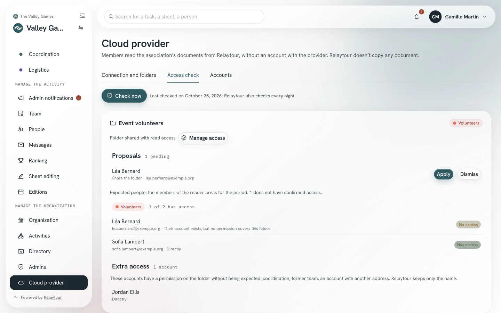
The “Access check” tab, on the sample organization. A fictional directory stands in for the provider.
The “Fiches Relaytour” folder cannot be linked to an activity. A change of provider deletes the export folder of the previous provider.
Good to know
Four points to watch
Export before importing
Changes made in the application take precedence over the content folder. Download the archive before any reimport, otherwise the import stops to protect your work.
One account, several organizations
A person keeps a single account for all their organizations. Archiving applies only within your organization: it changes nothing elsewhere, and no other organization is informed. The name belongs to the person, who edits it in their preferences.
Role addresses protect people
Relaytour refuses personal contact details in sheets. Open the allowed domains only to shared mailboxes of the organization.
Visibility stays partitioned
A person sees an activity if they administer it or are appointed to it. Appointing an activity admin opens nothing else for them: they read their activity’s team, not the organization directory.
Outside the organizer workspace
Creating the organization, its limits, its suspension and the full export of its data belong to the person who runs the server. These actions go through administration scripts, not through this screen.
The other roles
The other user guides
You also administer every activity, and you use the screens shared by everyone. These two guides complement this one.